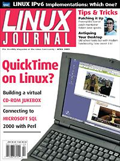

Shutdown Archive web server
Search:
Linux Journal
Issue #96/April 2002

Features
UNIX under the Desktop
by Doc Searls and Brent Simmons
Doc and Brent speculate on the possiblities presented by the UNIX that is the latest Mac OS.
Build a Virtual CD-ROM Jukebox
by Jeremy Impson
Jeremy shows how to set up a Linux server providing access to ISO 9660 images.
Connect to Microsoft SQL 2000 with the Perl Sybase Module
by Andrew Trice
Thought you couldn't use Perl to interface with an MS SQL server? Think again.
Indepth
An Interview with Andreas Leimer
by Phil Hughes
We talk to Inalambrica.net's CTO about how they use Linux to bring internet connectivity to Costa Rica.
Linux IPv6: Which One to Deploy?
by Ibrahim Haddad
Ibrahim gives the dope on the various open-source IPv6 projects.
Toolbox
Take Command
The m4 Macro Package
by Robert Adams
Kernel Korner
Hot Plug
by Greg Kroah-Hartman
At the Forge
Writing Zope Products
by Reuven M. Lerner
Cooking with Linux
Interoperate with Me
by Marcel Gagné
Paranoid Penguin
Hardening Sendmail
by Mick Bauer
GFX Linux Graphics Drivers
by Robin Rowe
Columns
Geek Law
On-Line Privacy
by Lawrence Rosen
Focus on Software
Defining Interoperability
by David A. Bandel
Focus on Embedded Systems
Interview with the Preemptible Kernel Patch Maintainer
by Rick Lehrbaum
Reviews
The CodeWeavers CrossOver Plugin
by Dave Phillips
SnapGear Lite: an Inexpensive Home Office/Small Office Firewall and VPN Client
by Alan Zeichick
Departments
Letters
upFRONT
From the Editor
LinuxWorld, New York
by Richard Vernon
Best of Technical Support
New Products
Archive Index
Shutdown Archive web server
Search:
Copyright © 1994 - 2018
Linux Journal
. All rights reserved.